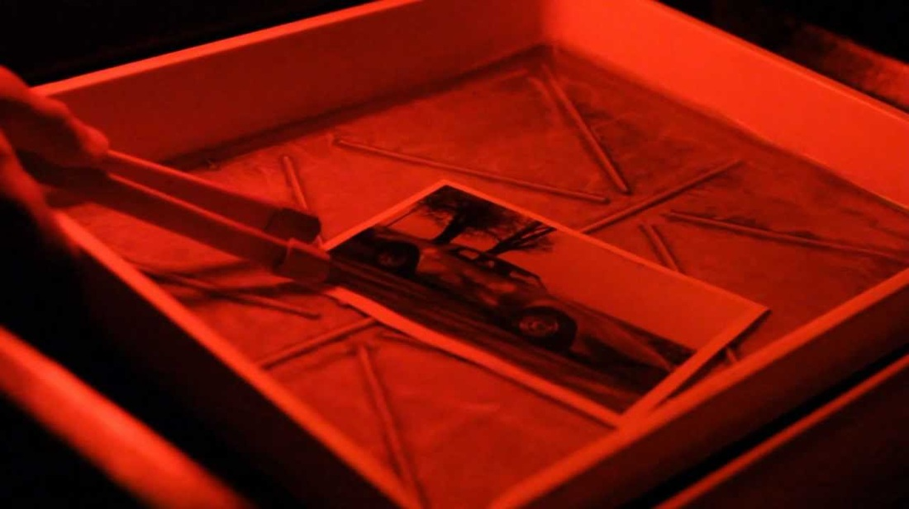
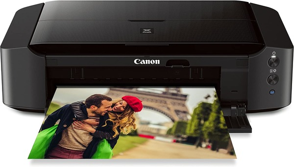

Що дешевше: роздрукувати власні фотографії чи скористатися послугою друку?
З появою недорогих послуг онлайн-друку фотографій струменеві принтери впали в немилість. Але, як і з будь-яким проектом DIY, деякі люди стверджують, що друкувати фотографії вдома дешевше. Це справді правда?
Швидке порівняння витрат
Давайте розберемо різницю в ціні між друком фотографій вдома та послугами онлайн-друку. Ми збираємося зробити це, порівнявши ціни на послуги онлайн-друку та друку вдома. Для зручності ми розглянемо лише вартість відбитків 4×6.
Існує багато онлайн-сервісів для друку фотографій, але ми будемо дотримуватися великої четвірки. Деякі з цих послуг пропонують періодичні знижки, але ми будемо робити вигляд, що їх не існує. Мотильник, одна з найпопулярніших послуг фотодруку, стягує 0,12 дол. США за кожен друк формату 4×6. Непогано, але Amazon, Snapfish, і Walmart надрукує ваші фотографії 4×6 за 0,09 доларів США за кожну
Гаразд, послуги онлайн-друку стягують від 0,09 до 0,12 доларів США за фотографію 4×6. Тепер нам потрібно порівняти ці ціни з установкою для домашнього друку фотографій. Отже, давайте побудуємо скромну домашню установку друку. Нам потрібен твердий струменевий принтер, трохи фотопапіру 4×6 і трохи чорнила.
Почнемо з принтера. The Canon Pixma IP8720 є одним із найпопулярніших домашніх струменевих фотопринтерів, і не зважаючи на це. Він створює зображення з роздільною здатністю 9600 кольорів DPI і коштує всього 180 доларів. Це бюджетна ціна для досить пристойного принтера.
Якщо ви не користуєтеся своїм принтером, все дорожчає
Звичайно, ця математика досить ідеалістична. Це залежить від ідеї, що ми використовуємо всі чорнило та фотопапір, які ми придбали. Якщо ми використовуємо лише 75 доларів США паперу та чорнила для створення 20 фотографій, то ми втратимо 3,75 доларів за фотографію, а не 0,12 доларів.
Якщо говорити про наш принтер, скільки саме Canon Pixma IP8720 додає до вартості кожної фотографії 4×6, яку
ми
друкуємо? Ну, це залежить від того, скільки ми використовуємо принтер. Наш Canon Pixma IP8720 коштує 180
доларів. Якщо ми надрукуємо лише 1000 фотографій на цьому принтері, то це додасть $0,18 до кожного з наших
відбитків. Якщо ми використаємо його 5000 разів, це все одно додасть $0,03 до кожного відбитка. Якби ми
хотіли,
щоб принтер вкладав менше ніж 0,01 дол. США на кожну фотографію, яку ми друкуємо, нам довелося б
використовувати її більше 18 000 разів.
Боже, друк вдома може обійтися дорого. Але якщо друк фотографій
вдома коштує дорожче, ніж друк фотографій в Інтернеті, то навіщо комусь купувати струменевий принтер?
Друк вдома дає вам контроль і швидкість
Є один аспект домашнього друку фотографій, з яким послуги друку не можуть зрівнятися. Коли ви друкуєте вдома, ви контролюєте все. Можна використовувати матовий або глянцевий папір, можна використовувати спеціальні чорнило, а можна використовувати принтер, який створює неймовірні зображення. У вас також є можливість викинути або змінити фотографії на льоту, якщо ви незадоволені роздруківкою, і вам не доведеться чекати, поки фотографії прийдуть поштою.
Крім того, деякі принтери дозволяють неймовірно легко друкувати фотографії безпосередньо з телефону або ноутбука. Наприклад, Canon Pixma IP8720 може підключатися до вашого телефону або комп’ютера бездротовим способом, і він навіть має мобільний додаток. Можливість друкувати фотографії безпосередньо з телефону не є унікальною для таких служб, як Shutterfly; ви можете зробити це у власному будинку.
Звичайно, більшості людей не потрібен такий великий контроль над фотографіями, які вони друкують, і кілька днів очікування біля поштової скриньки не є великою проблемою. Не кажучи вже про те, що якщо ви не використовуєте всі свої домашні друкарські матеріали, то в кінцевому підсумку ви витратите набагато більше, ніж 0,12 долара за відбиток.
Послуги друку дешеві та прості
Крім того, що це смішно дешево, послуги онлайн-друку фотографій також дуже прості у використанні. Вам не доведеться мати справу з розчарованим принтером, і вам не потрібно шукати ідеальні картриджі або фотопапір, щоб виконати роботу. У більшості онлайн-сервісів друку все, що вам потрібно зробити, — це перемістити фотографії на веб-сайт або в мобільний додаток і вибрати, якого розміру ви хочете мати відбитки.
Не кажучи вже про те, що ви можете в будь-який час роздрукувати свої фотографії через онлайн-сервіс. Вам не потрібно бути вдома, і вам, звичайно, не потрібно знаходитися поблизу принтера.
Єдиним реальним недоліком онлайн-друку фотографій є час очікування. Доставка може зайняти кілька днів, хоча деякі служби, як-от Walmart, дозволяють забирати фотографії в магазині через кілька годин після відправлення замовлення.
Деякі швидкі математики показують, що якщо ви не купуєте матеріали для друку зі знижкою і не використовуєте їх часто, друк фотографій вдома завжди буде коштувати дорожче, ніж друк фотографій через онлайн-сервіс. Але домашній друк дійсно пропонує рівень швидкості та контролю, якого онлайн-сервіси ніколи не досягнуть.
Фотографи та скрапбукери мають усі підстави друкувати свої фотографії вдома. Якщо ви друкуєте багато фотографій, то додаткові витрати виправдані. З огляду на це, якщо вам потрібно надрукувати лише кілька десятків фотографій на рік, то вам, ймовірно, варто зареєструватися в службі онлайн-друку.
Задумайтесь. Чому ви тут?
-
Ви перевіряєте мою роботу. І тут є такі варінти
- норм
- не норм
- капець
-
Ви один з учнів, що дивляться роботи одногрупників (як і я)
- так
- нєє
-
Якшо ні то ні то, то хто ви?!!!
- ви за мною слідкуєте?
- передаю привіт друзям